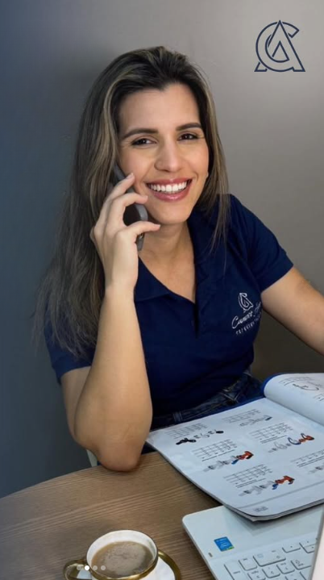

Conectando marcas de confiança a lojistas e profissionais da construção civil no Recôncavo Baiano.
"Foi ali, entre caixas e muitos materiais, que eu percebi meu potencial."
Antes de empreender, comecei como estoquista em uma grande empresa do setor da construção civil. Sempre sonhei em ter algo meu — e foi nesse ambiente que aprendi a atender com agilidade, resolver demandas e ir além.
Num mercado dominado por homens, criei a Campos Alves Representações. Hoje, no Recôncavo Baiano, o nome é sinônimo de confiança, presença e resultado.
Representar empresas que agregam valor real para quem constrói, reforma e transforma espaços todos os dias.
Entre em contato e descubra como a Campos Alves pode levar sua marca até os profissionais certos.